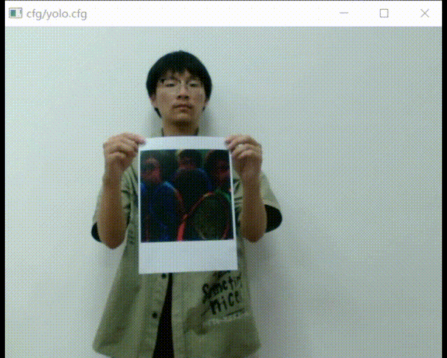
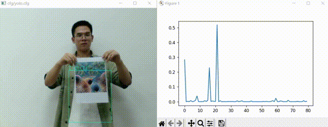
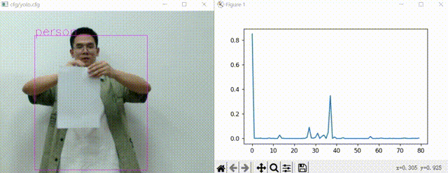

Adversarial Patch Attacks Against Person Detection
This project explores adversarial patch attacks on object detection systems. By generating and applying carefully optimized visual patterns, we aim to mislead YOLOv2 into failing to detect human figures. The approach builds on the idea that small, targeted modifications to an image can significantly alter neural network outputs. We generate printable patches that remain effective under physical-world conditions, using a loss function combining printability, visual smoothness, and detection confidence.
Our work enhances existing methods in two ways. First, by improving stealth—our patches can be nearly black yet still succeed in attacks.
Ssecond, by enabling misclassification, causing the model to mistake people for other objects such as bears or umbrellas.
Misclassified as a bear
Misclassified as an umbrella